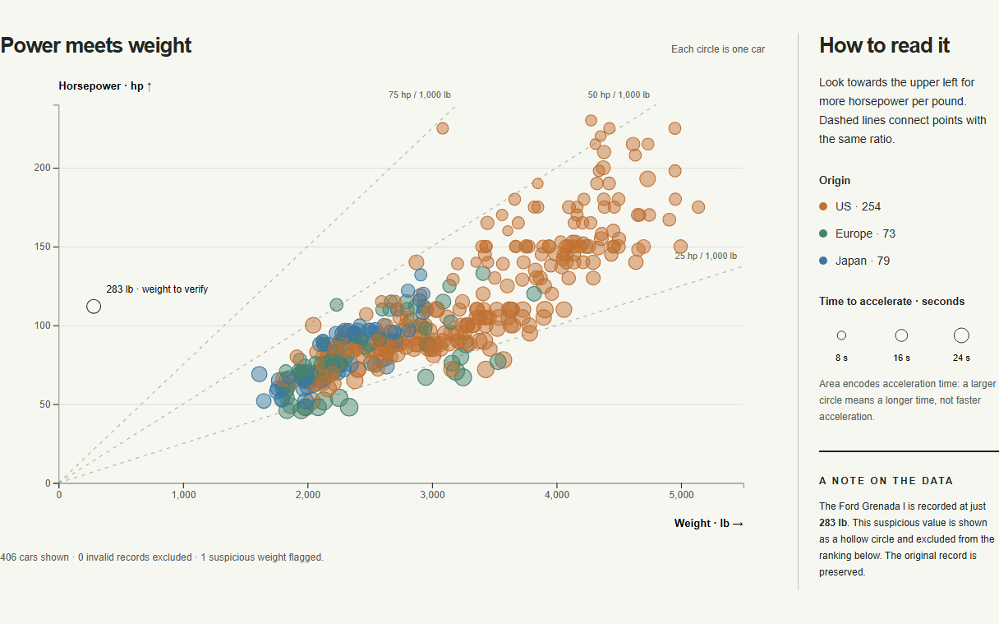
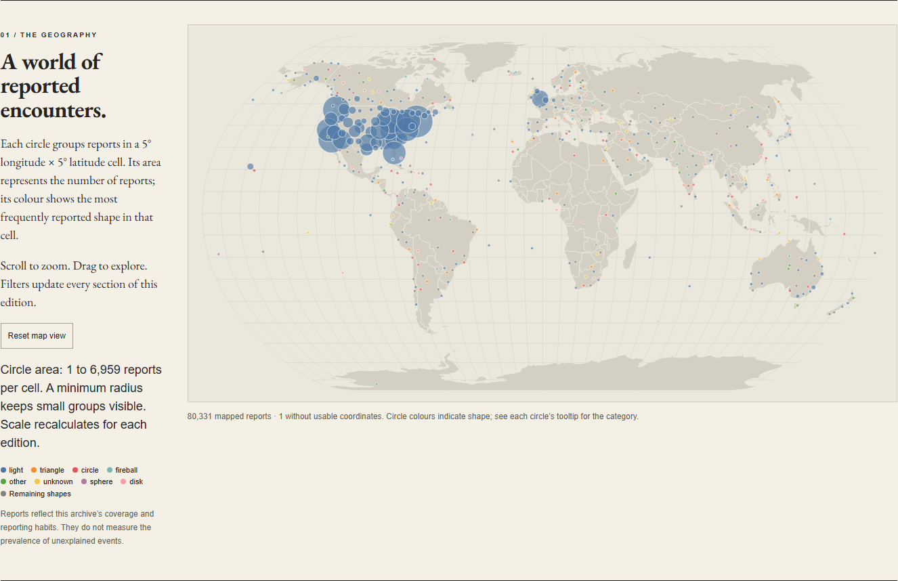

Car Goes Brrr

Uma visualização estática de 406 automóveis: peso, potência, origem e tempo de aceleração, com leitura da relação peso-potência.
Explorar o projeto →Dois projetos com D3.js: uma pergunta sobre automóveis e uma exploração de avistamentos de OVNIs em formato de jornal.
Por José Antunes e Ana Inês França.

Uma visualização estática de 406 automóveis: peso, potência, origem e tempo de aceleração, com leitura da relação peso-potência.
Explorar o projeto →
Um jornal de dados com 80 332 relatos, mapa, evolução temporal e testemunhos ligados por filtros comuns.
Ler o jornal →